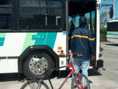
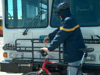
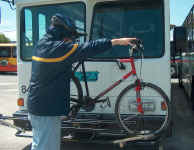
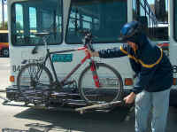
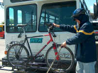

Bike racks are available on all RTS buses. Passengers are responsible for loading, securing, and unloading their own bikes. Bikes should be loaded and unloaded quickly to avoid delaying the bus on its schedule. If you have any questions, please ask your driver.
Loading your bike

- When the bus approaches and stops, you should have the bike ready to load, then let the driver know that you will be loading a bike.

- Approaching from the curbside, you should lower the rack with one hand while supporting the bike with the other hand.

- After lowering the rack, you should place the bike into either of the rack's wheel wells. Both bike positions are completely independent of each other, making it easy to load in seconds.

- After the bike is positioned in the rack's wheel wells, you should pull the support arm out and up over the front tire of the bike. The rack contacts the bicycle’s tires only, no contact is made with the bicycle frame.

- After quickly raising the support arm up and over the front tire, you should be ready to board the bus. Bikes should be loaded from the front or curbside of the bus for safe, efficient operation.
Unloading your bike
- When the bus approaches the stop, you should inform the driver you will be removing your bike.
- Approaching from the curbside or while directly in front of the bus, you should raise the support arm off the tire.
- After the support arm is off, lift the bike out of the wheel wells.
- Once the bike is out of the wheel wells, fold up the rack if no other bikes are on the rack.
Responsibility
Bike racks are provided as a convenience to bus riders. Humboldt Transit Authority is not responsible for: the theft or loss of bikes; damages incurred to bikes while on the transit system or at a bus stop; damages to bikes during loading or unloading; or injury to the rider during loading or unloading a bike. Riders will be responsible for any damages or injuries to third parties caused by the rider or bike while loading or unloading the bike, or failing to secure the bike on the rack correctly.